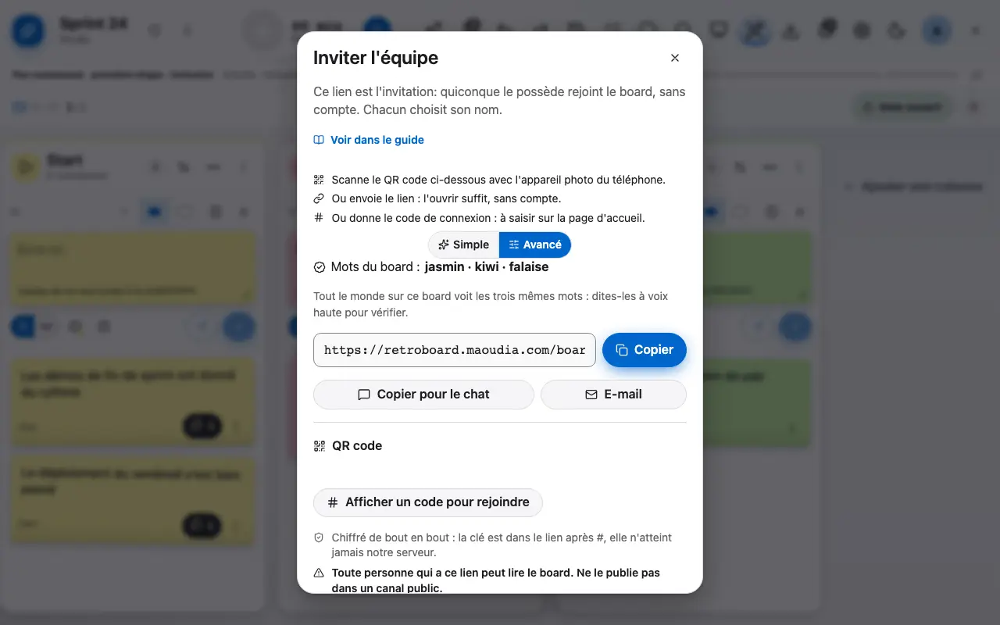
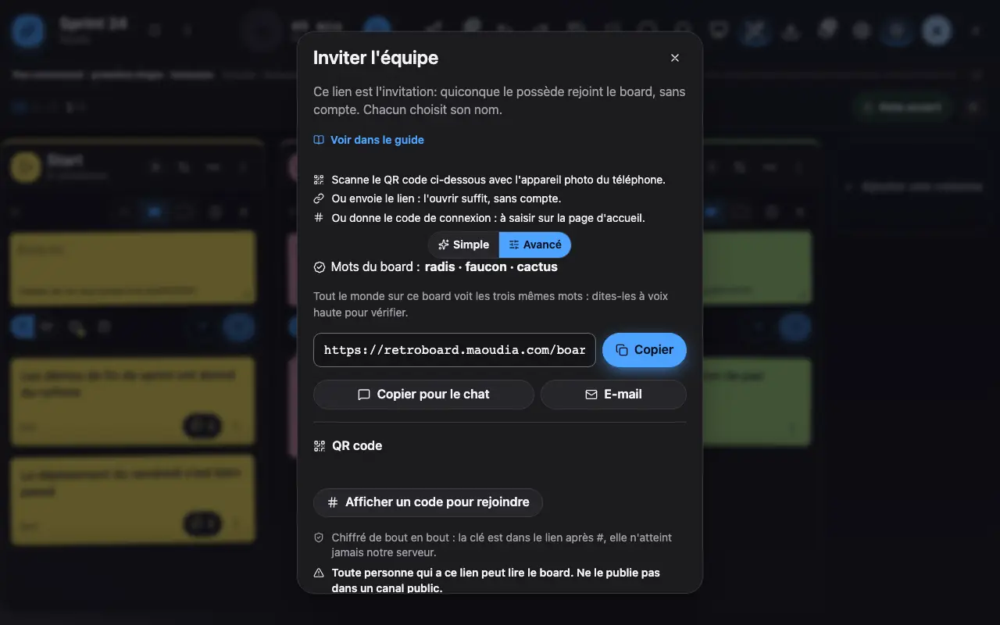

Le lien du board contient la clé de chiffrement: partage-le, c’est tout.
1 Le panneau Partager donne le lien, le code et le QR code.
Le panneau Partager donne trois façons d'inviter: le lien (à coller dans un chat ou un e-mail), le QR code à scanner avec un téléphone, et un code court à saisir sur la page d'accueil. Les trois mots du board permettent de vérifier à voix haute que tout le monde est sur le même board.
Ne publie pas le lien dans un canal public: quiconque le possède peut lire le board.


Le panneau Partager donne le lien, le code et le QR code.